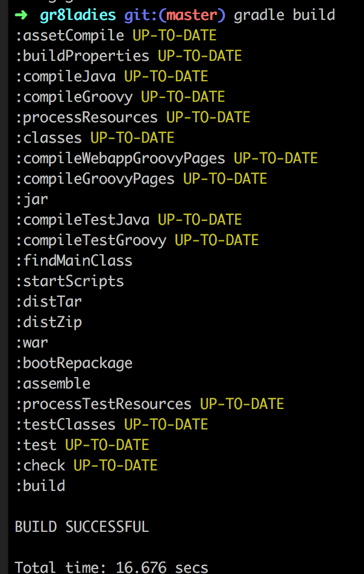
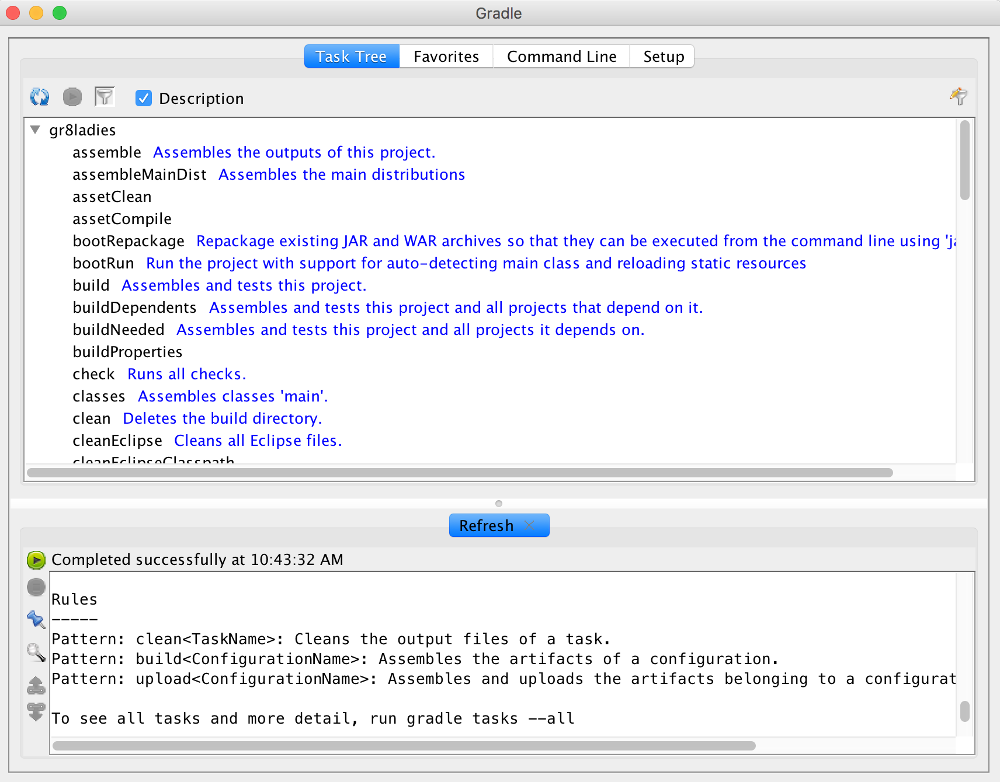

Gradle Basics
by Jenn Strater @codeJENNerator
@codeJENNerator
Current
About Me
Professional
-
 Senior Consultant - Object Partners
Senior Consultant - Object Partners
-
 Co-Founder - Gr8Ladies
Co-Founder - Gr8Ladies
About Me
Experience
 source: http://tjvantoll.com/2014/12/29/so-you-want-to-write-a-tech-book/
source: http://tjvantoll.com/2014/12/29/so-you-want-to-write-a-tech-book/
About Me
Minneapolis, MN

About YOU
- Students
- Professional Developers
- Java
- .NET
- PHP or Ruby
- JRuby, Scala, or Clojure
- Groovy
Agenda
- Intro to Gradle
- Getting Started
- Concepts
- Tasks
- Plugins
- Custom Builds
Powerful Build Tool with:
- Groovy DSL
- Dependency Management
- Support for many languages/platforms
- Prolific Plugin Library
- A terrible website (gradle.com)
Gradle
Used by many major companies including:


When to use Gradle
- Polyglot Builds
- Tooling supports Gradle
- Complex dependency management
- Concise, Readable Build Logic
- High Performance
- Enhanced Reporting
When Not to use Gradle
- lots of legacy code in another build system
Getting Started
- Download Locally
- SDK Manager (formerly GVM)
sdk install gradle
http://gradle.org/gradle-download/
Gradle Command line
Gradle Wrapper (suggested)

Gradle GUI
Terminology
| Task | an atomic piece of work |
| Project | collection of tasks |
| Build | one or more projects |
My First Build File
Option One:
manually create build.gradle
Option Two:
gradle initcreates:
- build.gradle
- gradle wrapper
- settings.gradle
*TRY IT*
gradle init --type groovy-libraryGradle Tasks
Defining a task
task helloWorld {
doLast {
println 'Hello world'
}
}Task Phases
| Configuration | run for all tasks everytime gradle is run |
| Execution | run only when a specific task is executed |
Task Phase Example
task foo {
println 'Configuration phase'
doLast {
println 'Execution phase'
}
}Alternative Syntax
Not recommended. For reference only.
task foo << {
println "Execution phase"
}
task bar {
println "Configuration phase"
} << {
println "Execution phase"
}Order of Operations
- mustRunAfter
- shouldRunAfter
- finalizedBy
- dependsOn
Building Java and/or Groovy Projects
Plugins
apply plugin: 'groovy'apply plugin: 'java'Common Tasks
| assemble | compiles and packages project (into a jar) |
| check | runs tests and static analysis tools (such as codenarc) |
| build | runs both assemble and check |
Adding Dependencies
apply plugin: 'groovy'
repositories {
mavenLocal()
mavenCentral()
jcenter()
}
dependencies {
compile 'org.codehaus.groovy:groovy:2.4.5'
testCompile group:'org.spockframework', name:'spock-core', version:'1.0-groovy-2.4'
}Dependency Configurations
| compile | The dependencies required to compile the source |
| runtime | The dependencies required at runtime(includes compile time depenenncis). |
| testCompile | The additional dependencies required to compile the tests (includes compile time dependencies). |
| testRuntime | The dependencies required to run the tests (includes testCompile and runtime dependencies). |
Custom Plugins
Creating a Plugin
- apply from file
- add plugin code in buildSrc
- add a build dependency of published plugin
Build Classpath
Build classpath is distinct from application classpath
buildscript {
repositories {
jcenter()
}
dependencies {
classpath 'com.github.jengelman.gradle.plugins:shadow:1.2.2'
}
}
apply plugin: 'groovy'
apply plugin: 'com.github.johnrengelman.shadow'
repositories {
jcenter()
}
dependencies {
compile 'org.codehaus.groovy:groovy:2.4.5'
}Useful Plugins
- Gradle Shadow Plugin (johnrengelman/shadow)
- Gradle SSH Plugin (int128/gradle-ssh-plugin)
- Gradle Asciidoctor Plugin (asciidoctor/asciidoctor-gradle-plugin)
- Gradle Codenarc Plugin (codenarc/codenarc)
Example Config - Asciidoctor
asciidoctor {
dependsOn test
sourceDir = file('src/docs')
outputDir "$projectDir/src/main/resources/public"
inputs.dir snippetsDir
backends 'html5'
attributes 'source-highlighter' : 'prettify',
'imagesdir':'images',
'toc':'left',
'icons': 'font',
'setanchors':'true',
'idprefix':'',
'idseparator':'-',
'docinfo1':'true',
'snippets': snippetsDir
}build.gradle
task publish(type: GradleBuild) {
dependsOn asciidoctor
buildFile = file('publish.gradle')
tasks = ['publishGhPages']
}publish.gradle
buildscript {
repositories {
jcenter()
}
dependencies {
classpath 'org.ajoberstar:gradle-git:1.1.0'
}
}
apply plugin: 'org.ajoberstar.github-pages'
githubPages {
repoUri = 'git@github.com:jlstrater/groovy-spring-boot-restdocs-example.git'
pages {
from(file('build/resources/main/public/html5'))
}
}Conclusions
- Gradle
- adds features to enhance productivity over other build systems
- is easy to extend and customize
- has extensive tooling with the gradle wrapper and IDE integration
Resources
Questions?
jenn@gr8ladies.org